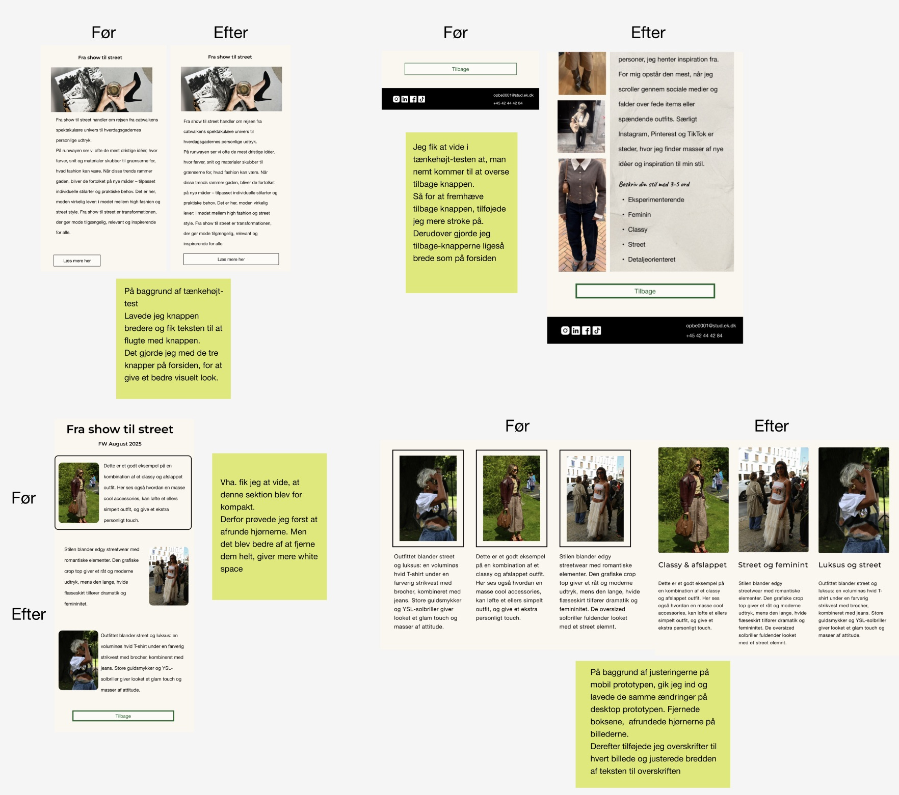
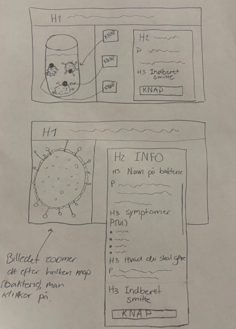
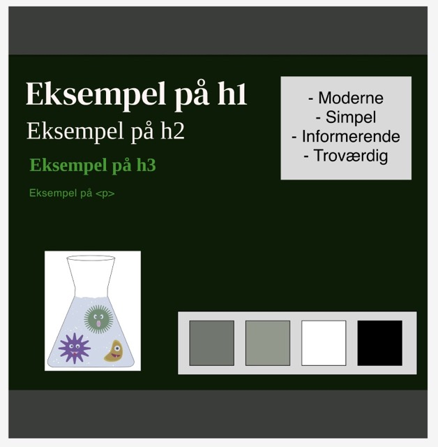
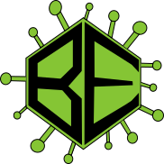
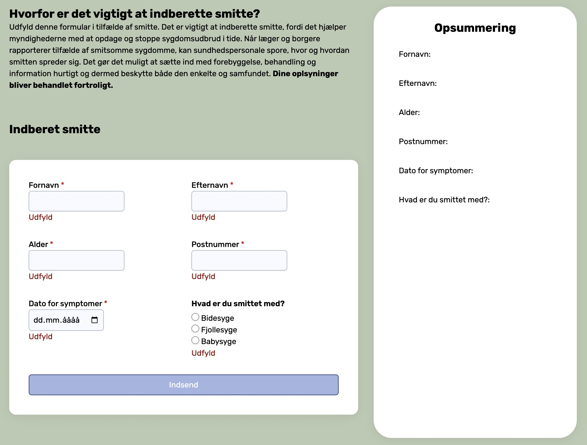

Tema 2
Tema 2, som startede fra anden uge på studiet, lærte jeg om basale designprincipper, HTML og CSS. I slutningen af temaet afleverede jeg opgaven "Mobilsite", som var en hjemmeside designet ud fra mobile-first princippet. Derefter skulle jeg bygge videre på hjemmesiden, så den blev responsiv. Dette skulle aflveres som studiestartsprøven.
Opgave
Her kan du se hjemmesiden mobilsite:
MobilsiteHer kan du se studiestartsprøven:
StudiestartsprøveProces
Jeg fik udleveret en zipfil samt wireframes og layoutdiagrammer af underviserne, der skulle downloades. Derefter gennemgik vi fælles hvordan hjemmesiden skulle styles med CSS.
Layoutdiagram

Wireframe

Mobilsite

Studiestartsprøve

Hvad har jeg lært?
På tema 2 lærte jeg om HTML og HTML struktur, dertil lærte jeg også en smule styling i CSS. Dét der var fokus på i starten var basale CSS styles, såsom grid, flex, media queries, fonter, farver. Jeg lærte også om grundlæggende designprincipper herunder gestaltlove, typografi og kontraster. Vi analyserede stil og genre på en valgt hjemmeside, til det lærte jeg også at bruge Figma. I Figma designede jeg også mit første logo i forbindelse med studiestartsprøven.
Tema 3
På tema 3 arbejdede vi med UX/UI-design, hvor vi gik i dybden med at lære at bruge Figma, som vi bl.a. brugte til at lave research og klikbare prototyper. Opgaven havde fokus på at identificere målgruppen for et valgt emne, her valgte jeg at lave et modemagasin. Jeg arbejdede med at forstå brugernes behov gennem research, analyse og feedback fra forskellige tests, som blev brugt til at tilpasse og optimere hjemmesidens design.
Opgave
Her kan du se emnesitet:
EmnesiteProces
Her kan du se hele designprocessen:
Designproces i FigmaPå Tema 3 har jeg arbejdet med research, herunder user stories, for at identificere målgruppen til den hjemmeside, jeg udviklede. Jeg anvendte observationsresearch til at analysere, hvordan målgruppen navigerer på hjemmesider. Dette gjorde jeg for at få finde ud af, hvilke elementer der var vigtige at have fokus på i udviklingen af hjemmesiden. Efter researchet udviklede jeg wireframes, som jeg i starten var tilfreds med. Senere blev jeg dog opmærksom på, at stilen ikke passede til målgruppen. Derfor udarbejdede jeg nye moodboards og et nyt styletile, som bedre matchede målgruppens behov og forventninger. På baggrund af den nye stil udviklede jeg nye wireframes og en klikbar prototype. Prototypen blev testet og brugt til at tilpasse hjemmesiden løbende. Jeg brugte både 5-sekunders test og tænke-højt test for at optimere brugeroplevelsen og sikre, at designet var nemt at navigere i og ikke mindst brugervenligt.
Styletile

Mobil prototype

Desktop prototype

Tænkehøjt test
Hvad har jeg lært?
På tema 3 har jeg fået forståelse for UX/UI-design og betydningen af at have brugeren i fokus . Jeg har lært, hvordan research danner grundlag for at definere målgrupper og brugernes behov. Temaet har givet mig erfaring med at omsætte research til konkrete designvalg gennem wireframes, moodboards, styletiles og klikbare prototyper i Figma. Derudover har jeg lært at arbejde i en gentagende designproces, hvor tests har været vigtigt til at forbedre designet.
Tema 4
På tema 4 udviklede jeg mine færdigheder inden for design og
implementering af brugergrænseflader.
Jeg startede med at klone et repository på GitHub hvor jeg selv
skulle finde på en "emergeny" og stil til hjemmesiden. Som en del af
projektet videreudviklede jeg siden med JavaScript, hvilket også var
min første oplevelse med kodningssproget.
Opgave
Her kan du se hjemmesiden:
TemaopgaveProces
Her kan du se hele designprocessen:
Designproces i FigmaJeg startede med at brainstorme omkring, hvilken type “emergency” jeg ville tage udgangspunkt i, og valgte til sidst en bakterieepidemi. Ud fra dette skitserede jeg ideer til designet af hjemmesiden og udviklede styletiles. Jeg lavede derefter vektorgrafik i Illustrator som blev brugt som logo og til at skabe animationer ved hjælp af CSS og JavaScript. Til forsiden af hjemmesiden skulle jeg også bruge illustrationer og der prøvede jeg forskellige AI-modeller af, til at skabe billeder ud fra de SVG'er jeg havde lavet. Efterfølgende gennemgik vi i undervisningen hvordan man laver accordion, pop-up vinduer, formular og implementere dark mode, som skulle bruges til opgaven.
Sketch
Styletile
Vektorgrafik
JavaScript formular
Hvad har jeg lært?
På tema 4 har jeg udviklet mine færdigheder inden for intersktive elementer på hjemmesider, ved at kombinere CSS og JavaScript. Jeg lærte at skabe dynamiske elementer som formular, darkmode, grundlæggende animationer, der alle sammen er med til at forbedre brugeroplevelsen. Jeg lærte også om vektorgrafik og hvordan det kan bruges til at skabe en mere "levende" hjemmeside. Temaet gav mig masser af erfaring, da jeg kunne eksperimentere med forskellige teknikker til at styrke både interaktivitet og visuel æstetik.
Tema 5
På tema 5 var der fokus på grundlæggende indhold, hvor opgaven der skulle afleveres, var et gruppeprojekt. Opgaven gik ud på at vi skulle lave et re-design for en virksomheds hjemmeside. Til det, skulle vi skabe indhold i form af billeder som også skulle behandles ved brug af Photoshop. Ud fra vores valgte virksomhed, Me&We, en asiatisk takeaway-restaurant på Fisketorvet, fandt vi ud af at vi skulle skabe et målgruppe re-brand. Dette medførte en længere researchfase med særligt fokus på målgruppen.
Opgave
Se hjemmesiden her:
VirksomhedssiteProces
Her kan du se hele designprocessen:
Designproces i FigmaVi startede opgaven ud med at sætte os i gruppen og udfylde "The team canvas basic", hvor vi fik skudt gruppearbejdet igang, ved at aftale regler og formål, for at få et godt samarbejde. Dernæst gik vi igang med at finde en virksomhed. Vi stødte på Me&We, da et gruppemedlem havde kendskab til dem. Vi startede derefter med at analysere Me&We's nuværende hjemmeside og opdagede, at det ikke fremgik, at de har en afdeling i København. Derfor fokuserede vi på at skabe et re-brand rettet mod den københavnske målgruppe, vi valgte derfor også at lave en hjemmeside dedikeret til afdenlingen i København. Vi udviklede moodboards og styletile for at finde en ny stil. Herefter lavede vi wireframes samt prototype og layoutdiagrammer, som vi testede også begyndte således kodningsprocessen. Jeg havde ansvar for menukortet på hjemmesiden og fokuserede på at redigere de eksisterende produktbilleder, og give dem et mere attraktivt og friskt look. Dette gjorde jeg ved at bruge Photoshop, hvor jeg gav billederne klarere farver, varmere toner, mere skygge og dybde i farverne.

Hvad har jeg lært?
Gennem arbejdet med opgaven på tema 5 har jeg lært en masse både fagligt og samarbejdsmæssigt. Jeg har fået mere erfaring med at bruge Photoshop til at redigere produktbilleder. Jeg har også fået indsigt i, hvordan man arbejder med moodboards og styletile for at skabe en visuel retning for et re-brand. Derudover har jeg lært, at have fokus på målgruppen, når man udvikler nyt indhold, og hvordan research kan guide designvalg og kommunikation. Arbejdet i gruppen har været vildt godt og jeg har oplevet, hvordan det hjælper at aftale roller, regler og formål tidligt i processen, så arbejdet bliver mere struktureret.